Lima on Screen
A Century of Urban Cinema, 1938–2024
This narrative traces how Lima has been seen, imagined, and constructed through cinema over nearly ninety years. It moves between two parallel timelines: the history of the films themselves, and the history of the places they chose to inhabit. Together they tell a story about a city in constant negotiation with its own image — what it wants to be, what it cannot escape, and what it films when it wants to remember.
The City Before the Conflict 1938–1968
Before the years of internal crisis, Lima's cinema looked outward and upward — to the republican grandeur of its historic centre, to the comedy of its streets, to a city that believed in its own modernity.
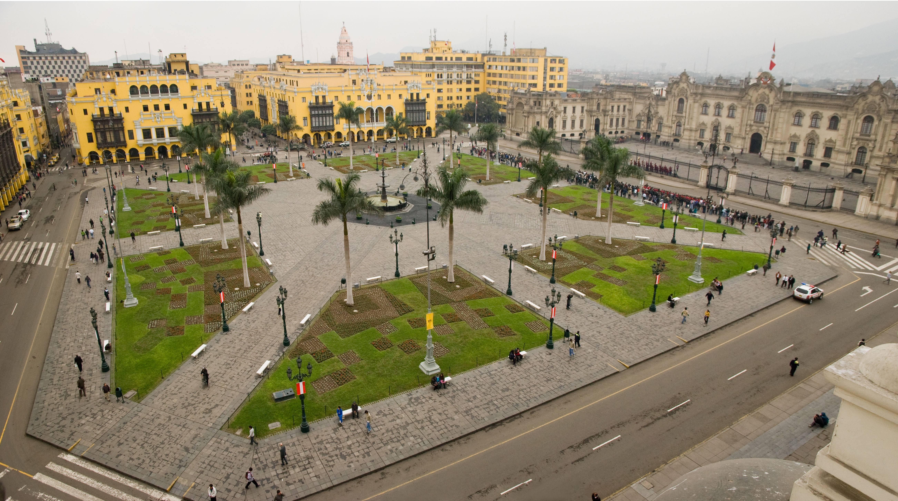
San Martin Square — Centro Histórico
Palomillas del Rímac opens in Plaza San Martín. One of the earliest surviving examples of Peruvian fiction cinema shot on location in the city.
Las Sicodélicas takes to the streets of downtown Lima during a period of rapid social transformation. The Lima of 1968 still gravitates toward the historic downtown, not yet the southern districts that will dominate later decades.
The decade that follows marks a fracture. Peru enters a period of political upheaval — the 1968 military coup, agrarian reform, and the slow build of an internal conflict. Cinema turns darker. The city it films begins to show its wounds.
Children of the Crisis 1984–1991
Grupo Chaski documents the lives of those the city has abandoned. The port, the river, the market — the spaces of labour and survival — move to the centre of the frame.
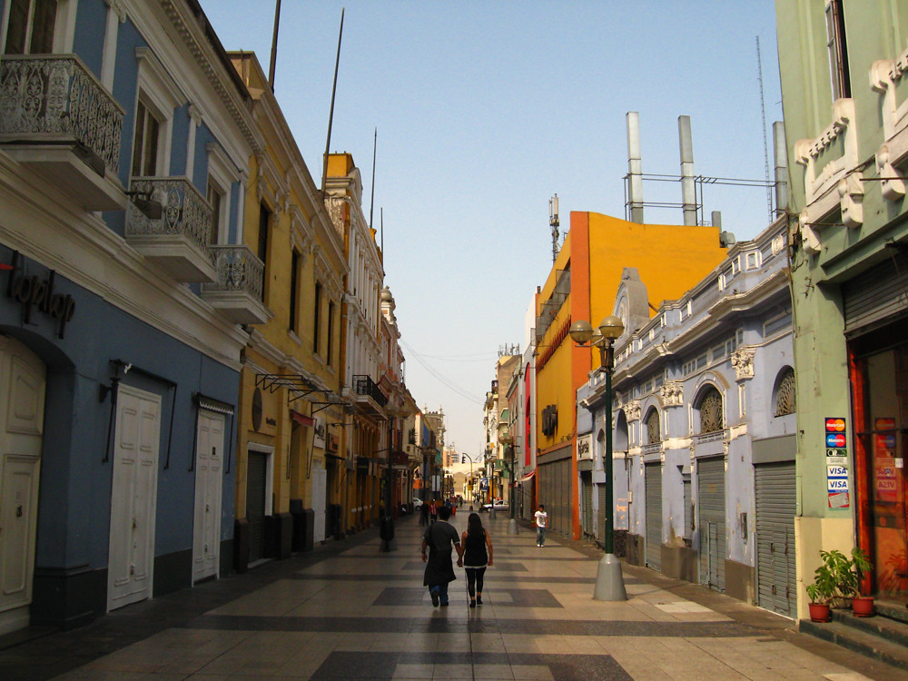
Jirón de la Unión — Centro Histórico
Grupo Chaski releases Gregorio, a neorealist portrait of a child migrant navigating Lima's streets. Location as document.
Grupo Chaski returns with Juliana. The same locations reappear — deliberately: these spaces have not changed because the conditions that produce them have not changed. Cinema as witness.
Lombardi's Caídos del Cielo weaves three stories of crisis-era Lima. The city has not moved; its meaning has been transformed.
Alias "La Gringa" uses the port and the decommissioned prison island of El Frontón: the working waterfront and the site of a massacre the country has not fully reckoned with.
July 16, 1992. A car bomb on Calle Tarata kills 25 people. The violence of the internal conflict has reached the city's most protected districts. Cinema begins to look back — and, tentatively, forward.
Reckoning and Recovery 1993–2002
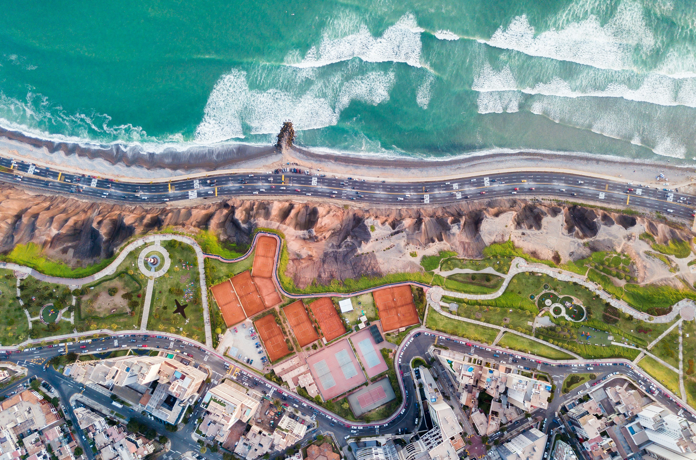
Malecón de Miraflores
Honigmann's Metal y Melancolía follows Lima's informal taxi drivers at night — beauty and exhaustion in equal measure.
Lombardi's No Se Lo Digas a Nadie. Larcomar — opened the same year — makes its first cinematic appearance. Lima's most exclusive spaces reveal what they conceal.
The 2000s bring sustained economic expansion. Cinema follows, producing films simultaneously more commercially sophisticated and more socially self-aware.
The City of Aspiration 2007–2024
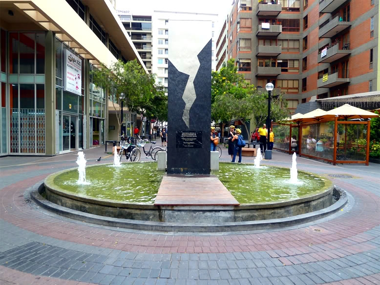
Calle Tarata — Miraflores
Aguilar's Tarata reconstructs the 1992 bombing on the street that bears its name. The film refuses to let the city forget.
¡Asu Mare! moves across Lima's class geography — from the public beach to the Golf Club — a film about crossing the city's invisible boundaries.
La Hora Final reconstructs the DINCOTE operations. Lima's urban fabric as evidence.
Esta es la U marks the centenary of Universitario de Deportes — collective memory as documentary.
Key locations across Lima — all districts represented in the timeline.
Itinerary 1: Cinematic Miraflores on Foot
A walking route through Lima's most filmed district
For the first route, we suggest a walk through Miraflores, one of Lima's most recognizable and tourist-friendly districts. The ideal starting point is Kennedy Park, the heart of the district and a fairly frequent location in Peruvian cinema. The park has appeared in films such as Lima 13, by Fabrizio Aguilar, a film that portrays different urban stories that intersect in the city. It can also be connected to Gregorio, a film that follows the life of a migrant boy who arrives in Lima and begins working on the streets. This connection is especially important because of the scenes in which the children go out to work in the streets of Miraflores, including Avenida Larco, one of the most direct routes toward the district's tourist axis.
Calle Tarata — Miraflores
If you continue along this avenue, within a few minutes you will reach Calle Tarata, a central stop on the route because of its connection to the film Tarata. The film takes as its reference the attack that occurred on this street in Miraflores in 1992, an event that deeply marked Lima's urban memory. The film approaches this context from a family and social perspective, showing how political violence also reached the city's residential and everyday spaces. If you walk along Calle Tarata, you will notice a monument dedicated to the victims of the attack, a point that makes this one of the most sensitive stops on the route.
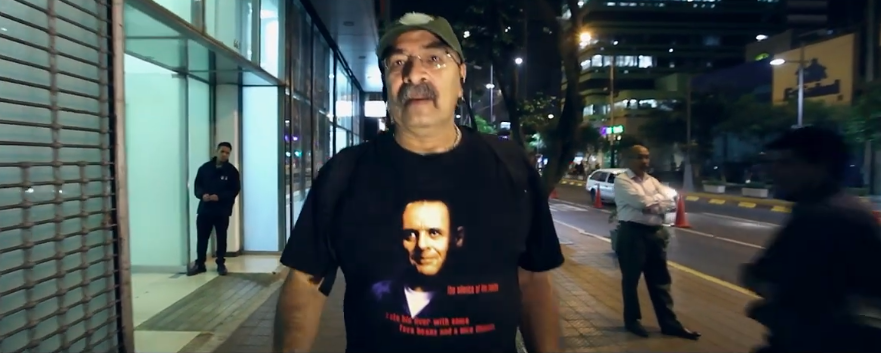
Avenida Larco — Miraflores
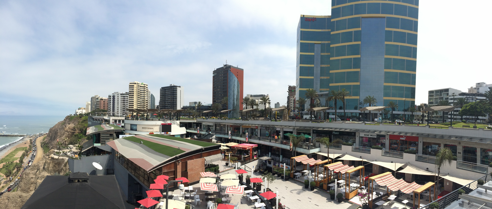
Larcomar — Miraflores
Continuing with the route, you can head toward Larcomar, at the end of Avenida Larco. Here, the route changes tone: it moves from the historical memory of Tarata to the contemporary, commercial and tourist image of Miraflores. This shopping center, completed and inaugurated in 1998 on the site of the former Parque Salazar, does not function so much as a confirmed film location within our list, but rather as a visual transition toward Lima's coastal edge. From here, you can connect with Avenida Larco, also present in Gregorio; with the Costa Verde and the cliffside landscape, associated with Caídos del cielo; and with the Miraflores Boardwalk, which was more recently used as a location in Paddington in Peru. This section allows visitors to compare different images of Miraflores: the city of memory, the modern city and the coastal city facing the Pacific.
To close the route, you can return toward central Miraflores through the Calle Schell / Diagonal area until you reach Calle de las Pizzas, historically known as Pasaje San Ramón. This street became popular during the 1970s and 1980s as a gastronomic and nightlife area, making it a good place to end the route with a reading of Miraflores' social life. It also appears in Arde Lima, a Peruvian documentary directed by Alberto Castro, which portrays Lima's drag scene and uses the city as part of its visual and nocturnal landscape. Thus, the itinerary ends by showing another side of Miraflores: urban leisure, nightlife, diversity and the social spaces that also form part of Lima's audiovisual imagination.
Itinerary 2: San Isidro, Residential Memory and Lima Cinema
A walk through Lima's financial and cultural district
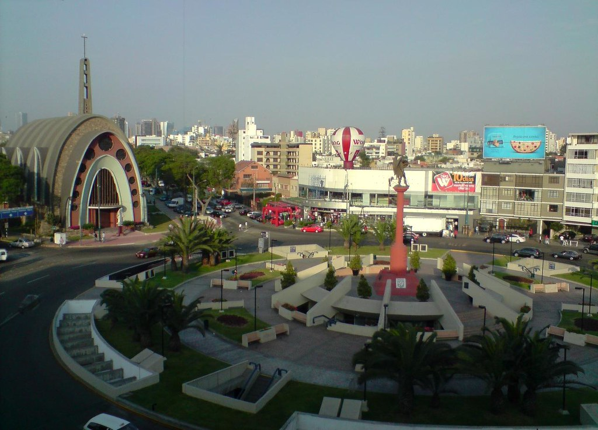
Óvalo Gutiérrez — San Isidro / Miraflores
For the second route, we suggest a walk through San Isidro, one of Lima's most traditional residential and financial districts. The starting point can be the Óvalo Gutiérrez, an area associated with cultural consumption, cafés, bookstores, cinemas and urban social life. From here, it is possible to introduce the social universe of No se lo digas a nadie, a film directed by Francisco Lombardi in 1998. The film follows a young man from Lima's upper class as he faces family, social and personal conflicts linked to his identity. For this reason, San Isidro works very well as a setting from which to read the tensions of Lima's upper class, its silences and its contradictions.
From the Óvalo Gutiérrez, the route can continue toward Camino Real and the El Golf area. This part of the route takes about 20 minutes on foot, although it can also be done by taxi if you want to avoid a long walk. In this area, it is useful to mention El embajador y yo, a spy comedy starring Kiko Ledgard, Patricia Aspíllaga and Saby Kamalich. The film moves within a tone of intrigue, humor and urban elegance, and some references place scenes linked to the Country Club Lima Hotel within the modern and elegant landscape of San Isidro in the 1960s.
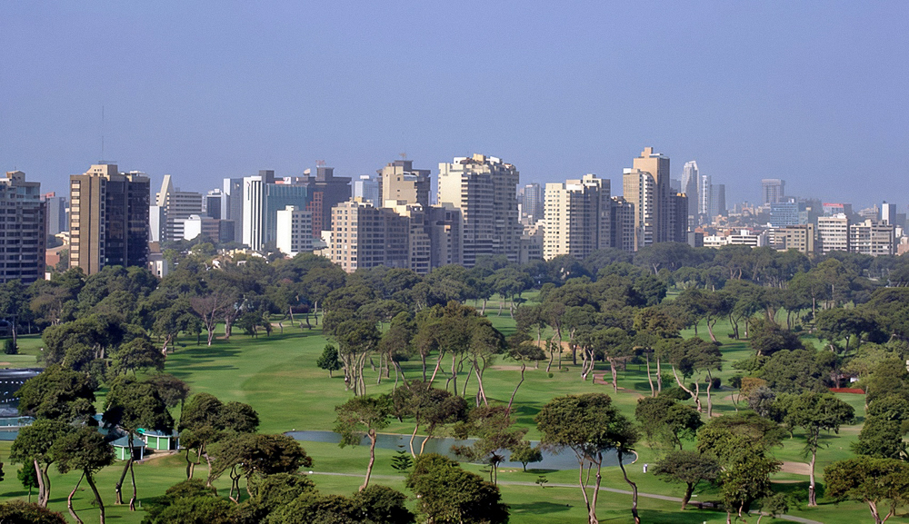
Lima Golf Club — San Isidro

Country Club Lima Hotel — San Isidro
The El Golf area also allows us to introduce Un mundo para Julius, the film adaptation of Alfredo Bryce Echenique's novel, directed by Rossana Díaz Costa. The story follows Julius, a child from a wealthy Lima family who observes the adult world, class differences and domestic relationships from a sensitive and innocent perspective. In this case, the reference is more direct: the film includes representative locations in San Isidro, among them the Country Club Lima Hotel. This stop works very well because the Country Club and the surroundings of the Lima Golf Club visually condense the social world that Julius' story observes and questions: mansions, clubs, hotels, gardens, golf and spaces associated with Lima's elite.
The Lima Golf Club is a private area, so it cannot be freely visited. However, the landscape can be observed from the surrounding streets and from nearby hotels, such as Hotel Los Delfines, which has views of the golf course. This part of the itinerary shows not only a film location, but also an image of San Isidro as a district of clubs, residences, hotels and exclusive spaces.
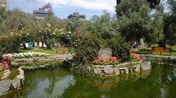
Bosque El Olivar — San Isidro
Afterward, the route can continue toward the Bosque El Olivar, where scenes from La última tarde, a film by Joel Calero, were shot. The film follows the reunion of a former couple who shared a political and emotional past, and who begin to talk again while walking through different spaces in Lima. For this reason, El Olivar works as a quieter stop, ideal for closing with a visual reading of residential Lima: mansions, old trees, silent streets and urban memory.
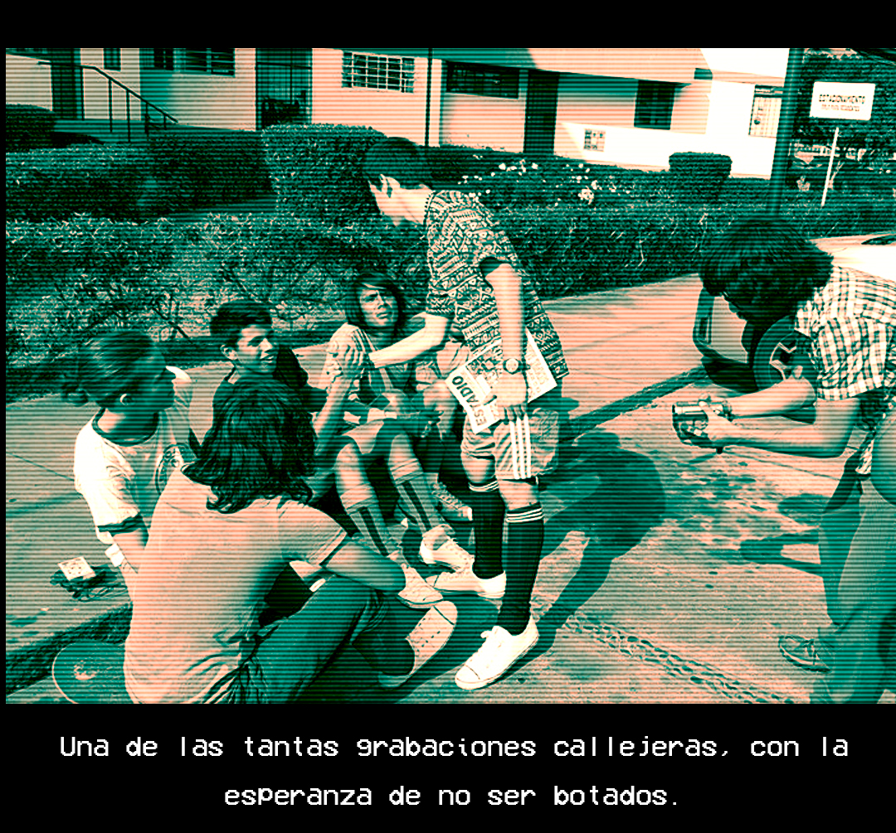
Santa Cruz Residential Complex — San Isidro
Finally, the itinerary can continue toward the Santa Cruz Residential Complex, a housing development built during the 1960s. Its architecture follows the principles of the modern movement and is characterized by residential blocks, elevated corridors, exterior staircases, courtyards, gardens, and shared spaces.
The Santa Cruz Residential Complex presents a different image of San Isidro. Instead of large hotels, office buildings, or private residences, this stop shows a multifamily housing project designed to encourage natural lighting, pedestrian circulation, and community life. Its plazas, gardens, and interior passageways continue to function as meeting spaces for residents. The complex is connected with Gen Hi8, and its modernist architecture makes it an appropriate space for representing family life, childhood, community, and Lima’s urban memory.
Itinerary 3: From Jorge Chávez Airport to Cinematic Callao
From neighborhood memory to maritime Callao

Jorge Chávez International Airport — Callao
The route can begin at Jorge Chávez International Airport, Peru’s main airport and the entry point to Lima for many visitors. Although commercial operations now take place in the new terminal, the former airport building was one of the main symbols of Lima’s modernization during the second half of the twentieth century.
This location appears in El embajador y yo, a Peruvian comedy starring Kiko Ledgard, Patricia Aspíllaga, and Saby Kamalich. The film includes sequences recorded in the former terminal of Jorge Chávez Airport. Its arrival halls, large windows, boarding stairs, and exterior platforms projected a modern and cosmopolitan image of the city during the 1960s. The airport therefore provides an appropriate starting point for the route, connecting the arrival in Lima with the international travel, diplomatic missions, and intrigue that form part of the film.
For the third route, we suggest a tour of Callao, beginning in the Callao Monumental area and continuing toward La Punta and the islands of Peru's main port. To reach the first point of this route, it is recommended to take a taxi from wherever you are to the Callao Monumental area, a tourist circuit renovated around ten years ago that brings together urban art, old houses, Republican-era balconies, historic squares and streets connected to the port memory of Peru's first port.
The main film for this first stop is Viejos amigos, directed by Fernando Villarán in 2014. The story follows three elderly men who steal the urn containing their friend's ashes in order to take him through his old neighborhood, Callao, and fulfill his final wish of having his ashes scattered in the sea near his hometown. For this reason, Callao Monumental works as an ideal entry point into the universe of the film: old streets, Callao squares, neighborhood memory and a strong emotional relationship with the port.
Scenes from Django: sangre de mi sangre, a film directed by Aldo Salvini in 2018, were also shot in nearby areas. The film continues the universe of the character Django and uses Callao as an urban backdrop for a police and crime story, with streets, enclosed spaces and environments that reinforce a darker and more tense aesthetic. Callao Monumental presents this area precisely as a circuit of old streets connected to the Real Felipe Fortress, historic squares and the port.
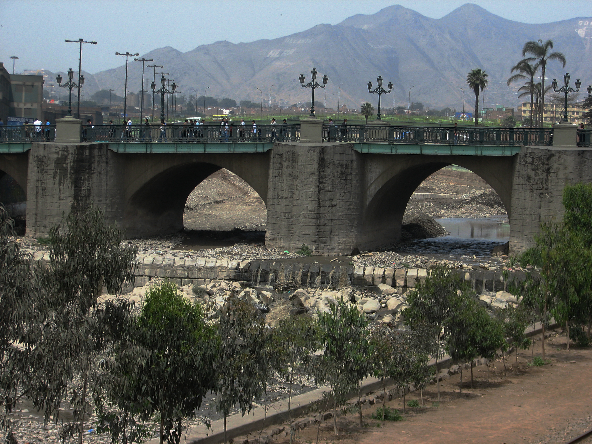
Río Rímac — Lima / Rímac
The itinerary can continue toward La Punta, a coastal district that allows the route to change tone. In this district is Cantolao Beach, where a large part of the scenes from Viaje a Tombuctú, directed by Rossana Díaz Costa in 2014, were filmed. The film tells a story of adolescence, friendship and memory in the context of Peru in the 1980s. For this reason, at this stop the gaze shifts away from urban and monumental Callao toward a more intimate, coastal and nostalgic image, linked to youth, family memory and the passage of time.
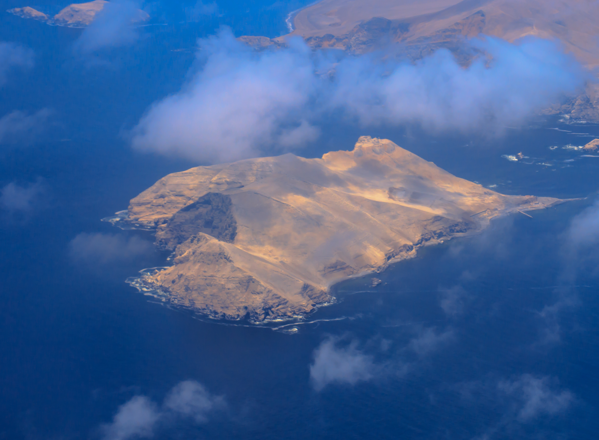
Isla El Frontón — Callao
Finally, the route can close with a view toward the islands of Callao. From Plaza Grau, you can take bus line 1133 and get off at Plaza Matriz in La Punta, then walk directly to Cantolao Beach. From there, you can take a boat trip to El Frontón Island, the main location of Alias La Gringa, a film directed by Alberto Durant in 1991. The story follows a daring fugitive who voluntarily returns to the feared island prison of El Frontón to rescue a professor who once saved his life. The island, isolated by the sea, becomes the central and oppressive setting of the film, making it a powerful ending for the route: from neighborhood and monumental Callao to maritime, historical and prison-related Callao.